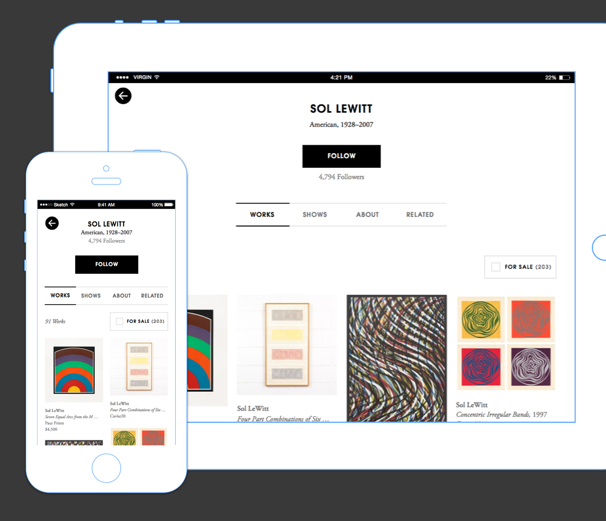
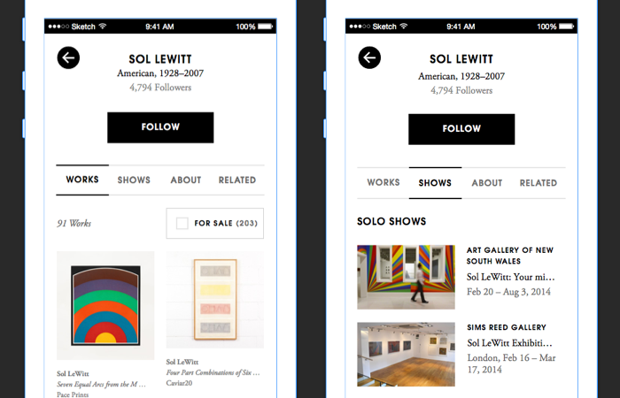
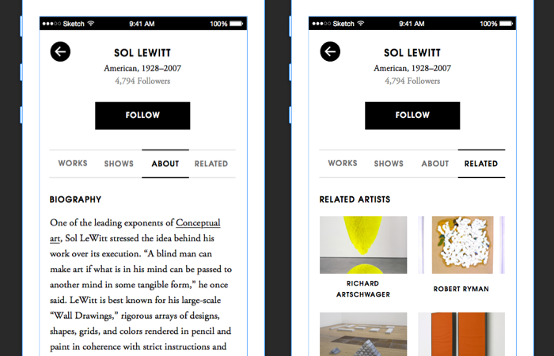
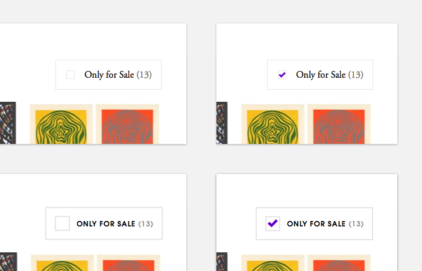

Artsy is an arts technology startup that aims to make the world's art accessible online. As an intern on the Artsy design team, I worked on a redesign of the artist information pages (one of the core pieces of the Artsy iOS app) as well as an unreleased interface for buying work in art auctions.
Redesigning the artist information page
The Artsy artist information pages are one of the core parts of the app—users frequently look for artists they're interested in learning more about and buying works from. The previous artist pages had . I was tasked with redesigning the page to encourage users to follow artists (and receive notifications when new information about the artist became available) and make it easier for commercially-oriented users to browse and discover works to buy. My redesign added a richer artworks view, the ability to filter for works for sale, and added ways to view articles relating to an artist.

Artworks are shown with pertinent metadata (which wasn't previously displayed on the page). The artist's shows are grouped by showing all solo shows, group shows, and fair booths that the artist's work was shown in. Seeing what kinds of shows an artist has had helps collectors get a sense of the artist's career success so far.

The artist's biography is available, as well as a "related" view that allows users to find similar artists they may be interested in following.

Artsy has a carefully considered visual aesthetic on its website, iOS apps, and communication materials. I spent quite a bit of time refining small elements of the interface and typography to best match Artsy's design style. Above, two variations I considered for the filtering checkbox.
One of the benefits of working on an open-sourced app is that I was able to make my mockups and design specs public. To see full images of each screen, see the Github for the iOS app!
Exploring art auctions on iPad and iPhone
I spent a month and a half of my summer exploring a mobile design for browsing and bidding on artworks in online auctions. I was responsible for early concepts around the iPhone and iPad auctions experience. This project has not yet been released.
- Year Summer 2015